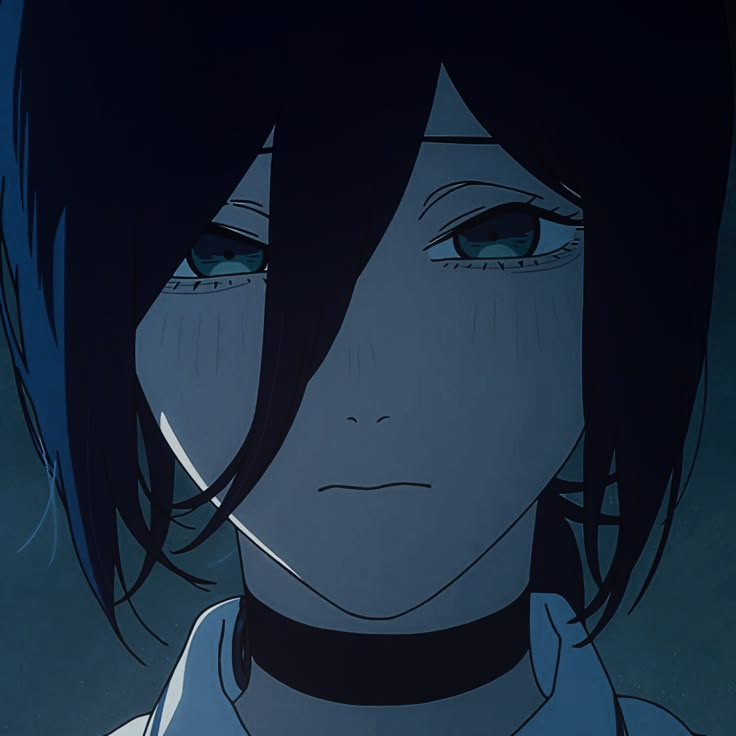
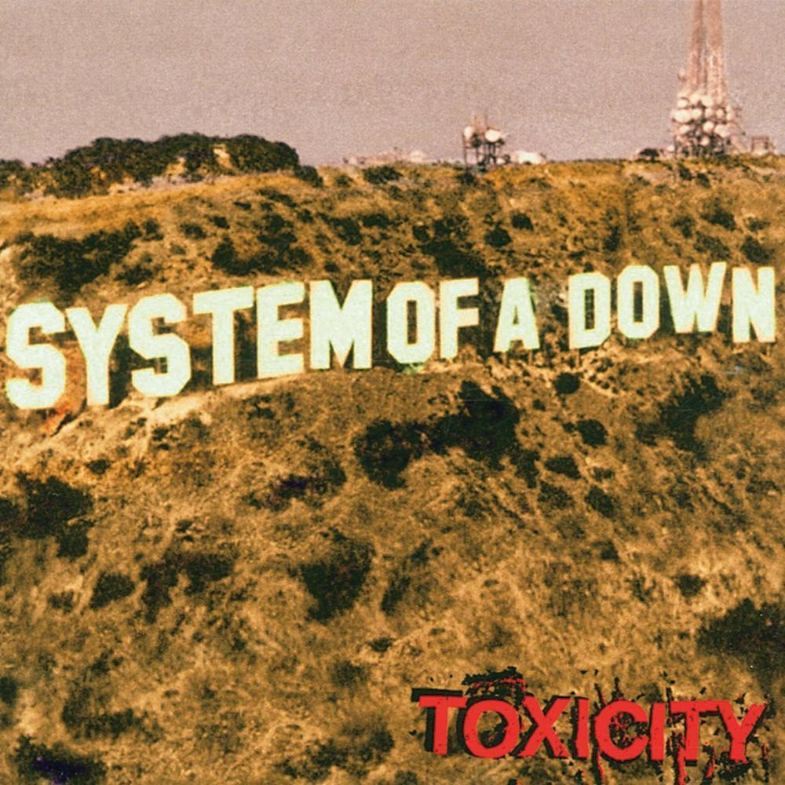
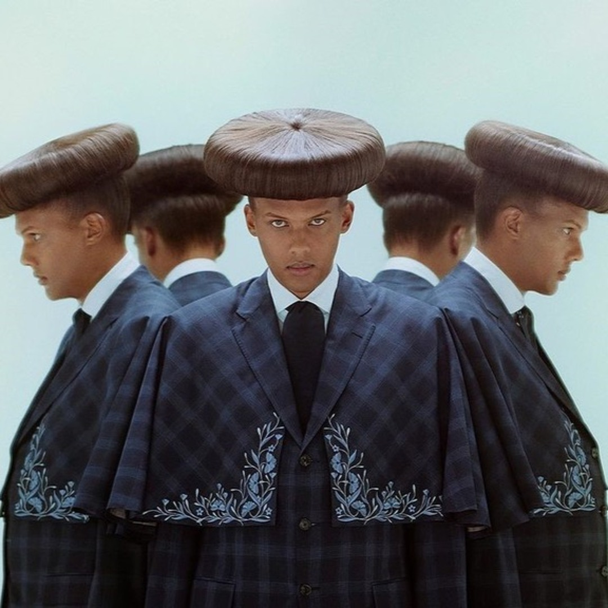
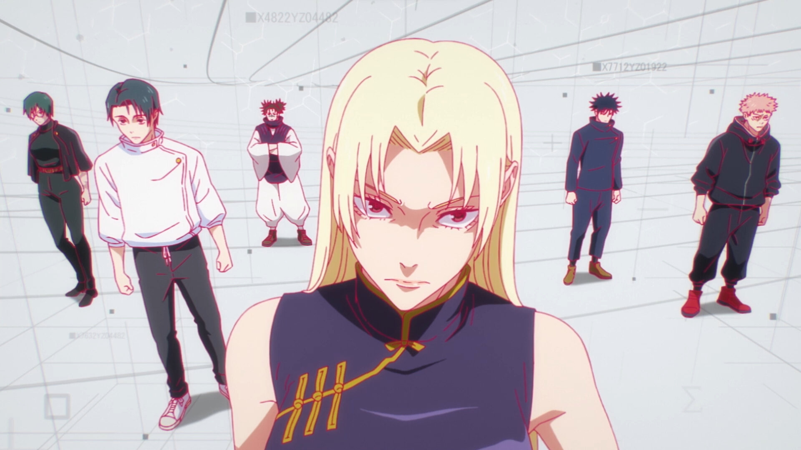
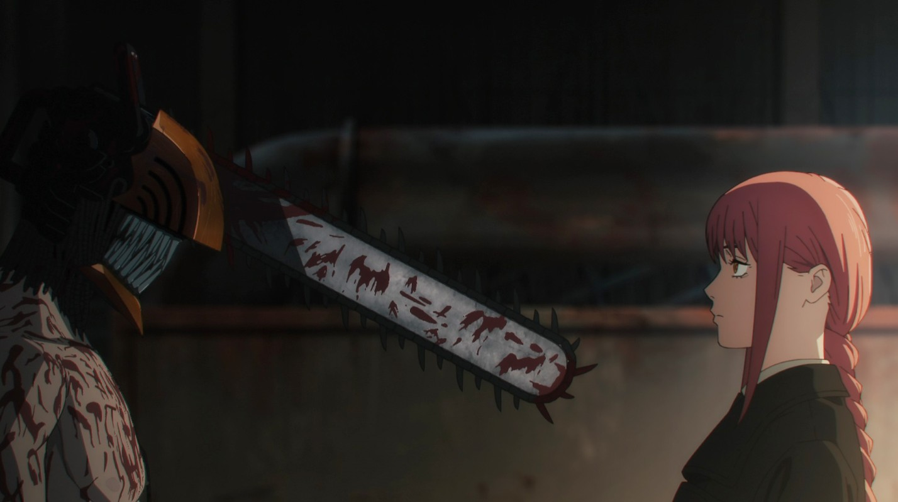
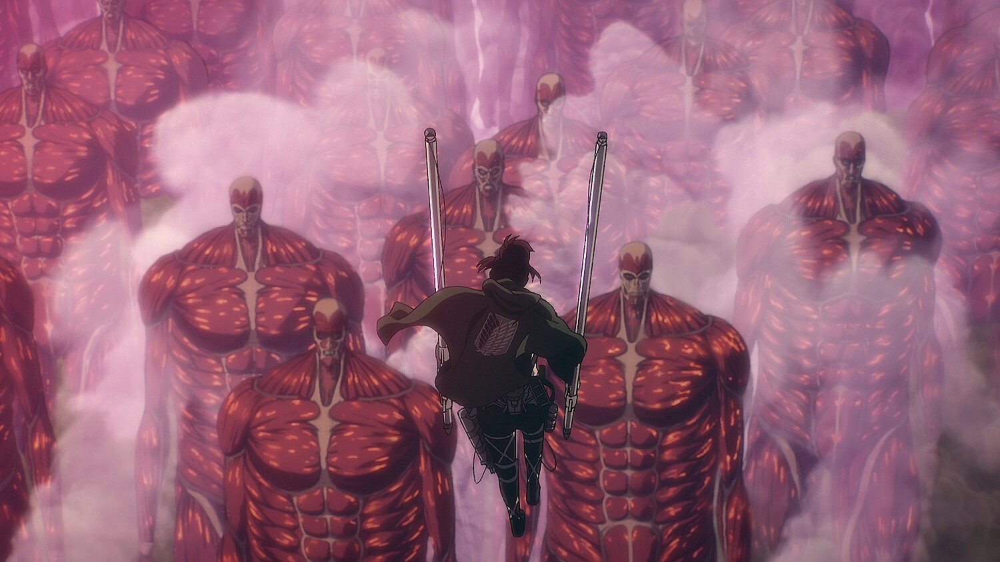
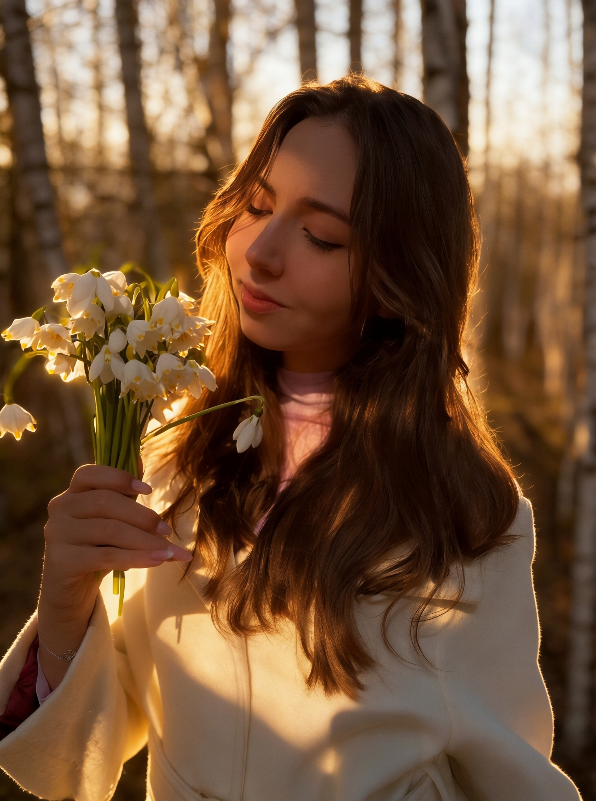
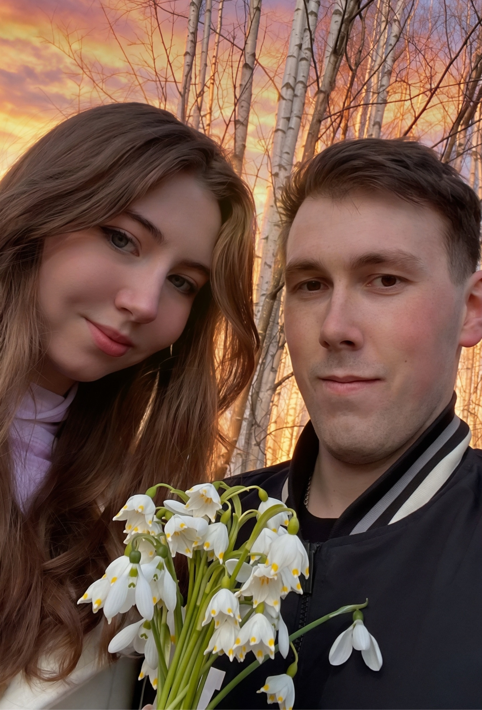

Привет! Меня зовут Маша
Добро пожаловать на мой сайт! Здесь я собрала всё, что мне нравится: любимую музыку, аниме и друзей. В каждом разделе можно немного познакомиться с моими вкусами, интересами и увлечениями.
Добро пожаловать на мой сайт! Здесь я собрала всё, что мне нравится: любимую музыку, аниме и друзей. В каждом разделе можно немного познакомиться с моими вкусами, интересами и увлечениями.


SOAD - одна из моих любимых групп, которая нравится мне своим необычным звучанием, мощной энергетикой и сочетанием тяжёлой музыки с мелодичными моментами. Распались:(
Музыка из сериала «Острые козырьки» (Peaky Blinders) нравится мне своей мрачной атмосферой, сильным звучанием и тем, как она передаёт настроение и характер героев. Это обязан услышать каждый!

Stromae я люблю за его яркий стиль, необычные клипы и песни, под которые хочется танцевать, даже когда в них затрагиваются совсем не весёлые темы. Он гениален..

«Магическая битва» сначала кажется обычной повседневкой про сражения с проклятиями, но постепенно превращается в довольно жестокую историю, где даже самые сильные персонажи не застрахованы от трагичного финала.

«Человек-бензопила» — безумная смесь чёрного юмора, кровавых сражений и неожиданных сюжетных поворотов, за которыми скрывается история о простом желании быть счастливым.

«Атака титанов» — история, в которой борьба за выживание постепенно перерастает в масштабный конфликт, заставляющий задуматься о свободе, цене войны и том, кто на самом деле является врагом.

Настя
Просто Настя

Степа
Просто Степа